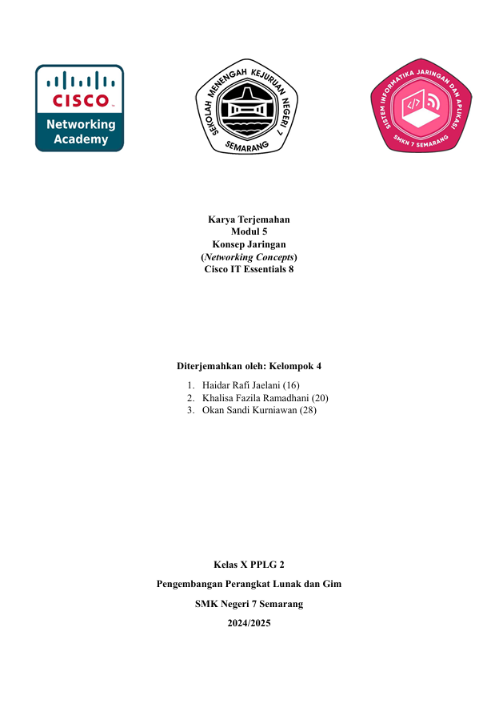
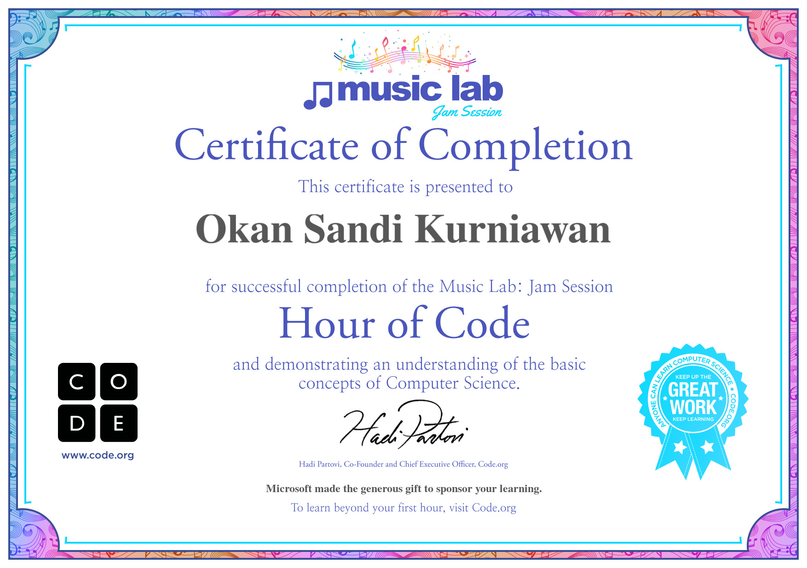

Sertifikat Penghargaan Solve Education
2024
Bahasa Inggris

Terjemahan "Konsep Jaringan"
2024
Networking

Sertifikat Juarra 3 Lomba Math City Map (MCM)
2024
Matematika

Sertifikat IT Essential (Cisco)
2024
Networking

Bagaimana Cara Merawat PC
2025
Design

Website Film & Series Indonesia
2026
Web Development

Smart Building & Smart Parking Joglo STEMBA
2025
IoT

Sertifikat Hour of Code (Minecraft)
2026
Pemograman

Biografi Ki Narto Sabdo
2025
Bahasa Indonesia

Smart Building & Smart Parking Powerpoint
2026
IoT

Sertifikat Code of Hour Music Lab
2026
Pemograman

Proposal Smart Garden (Powerpoint)
2026
Bahasa Indonesia